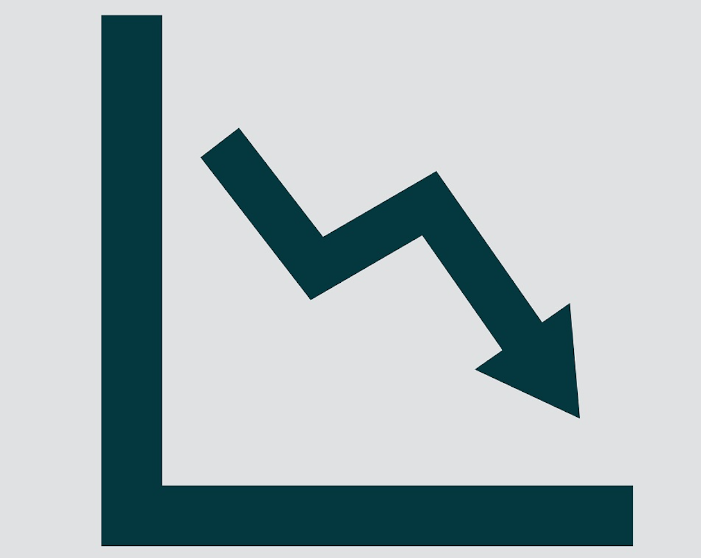
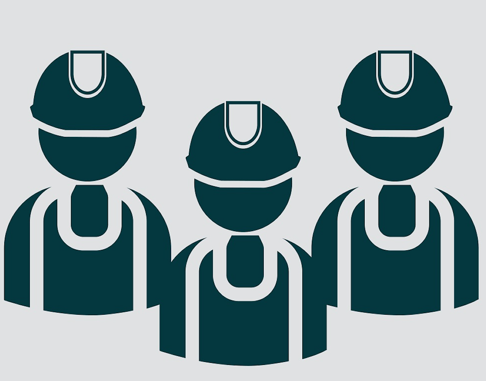

紥鐵工潮十周年
從日薪加十元到升兩倍
惟工新聞｜2017
前言
2007年爆發的紮鐵工潮，可能是2013年碼頭罷工出現之前，香港史上最大規模不涉民族主義的單一行業罷工。工潮過後，工會成立了，集體談判確立了，亦豎立了其後社會人士支援罷工方式的典範。
當年罷工結束，工人爭取到比資方叫價只高出10元的日薪，「慘勝」受到外界嘲諷與同情；如今隨著集體談判機制運作，這些年來紮鐵工人薪酬較工潮前升兩倍，又引起外界羨慕與妒忌。不過我們可知紮鐵工人經歷了怎樣的鬥爭？平日開工又背負了怎樣的技藝與風險？
十年過去，香港學到了甚麼？
工潮前狀況
2007年7月，紮鐵工人爭取加薪至日薪950元，並恢復八小時工作的行規。到8月初行內約定調薪的日子，訴求未獲商會應允，燃起持續36天的罷工。看似普通的勞工待遇談判之所以釀成大罷工，跟主權移交後十年業內累積的剝削大有關係。
- 
薪金急跌
隨著金融風暴和SARS兩次經濟危機，香港樓市降溫，民生未見受惠，紮鐵工人的薪金卻先被打擊。主權移交後十年，行內日薪由1200員暴瀉至800元。
工時漸增
紮鐵亟需體力與集中力，鋼筋重量以噸計，夏天暴曬易至中暑，長工時直接危害工人安全。九七後十年行內保不住八小時工作傳統，每日工時增加45分鐘。
- 
種族歧視
主流華裔工人受害，少數族裔所受壓榨更甚。2007年罷工前夕，尼泊爾裔紮鐵工人日薪比本地華裔工人低20-40%，即時廣東話流利亦不能同工同酬。
肥上瘦下
SARS期間樓價跌至谷底，其後一路回升，差餉物業估價署數字顯示2007年的私人住宅售價指數比2003年狂升近七成，發展盤滿缽滿，工人待遇卻每況愈下。
-
薪金急跌
1997至2007年間，紮鐵工人薪金由1200元暴瀉至800元。
-
工時漸增
九七後十年行內保不住八小時工作傳統，工時漸增。
-
種族歧視
尼泊爾裔紮鐵工人日薪比本地華裔工人可低四成。
-
肥上瘦下
2007年的私人住宅售價比SARS期間狂升近七成，發展商盤滿缽滿，工人待遇卻每況愈下。
紮鐵工藝
三行
所謂「三行」，即紮鐵、釘板、落石屎三個工種，為現代一般建築之基本。上述次序基本上不可調亂：先把鋼筋紮成基本骨架，再在外面釘上木板製成模具，然後將混凝土倒進模具定型。可以說，紮鐵常是這個建築工序的第一步。
日薪2,370元的紮鐵師傅，待遇看上去令尋常打工仔又羨又妒，吃這口飯的艱難卻不定為外人道。身處地盤險地，勞損、中暑、燙傷、骨折屢見不鮮，高空工作墮下或被吊機重物砸中而死亡也不稀奇。更重要的是，紮鐵是重動力勞動之餘也是一門專業工藝，要掌握大量技術與知識，殊不簡單。惟工新聞深入紮鐵工人培訓場地，為大家揭開這門工藝最表層的面紗。

手鉤
紮鐵手鉤，又稱紮鐵鉤仔或鉤仔，每位紮鐵工人開工必備的隨身工具。使用時圓環部份握在掌心，用鉤尖將鐵線打結綁穩鋼筋。
由於本身全是金屬所製，地盤又日曬雨淋，擱在一旁經陽光曝曬十多分鐘，再觸碰已經十分燙手。

手套
備用的安全手套。如前述，地盤日曬雨淋，在猛烈太陽照射下的鋼筋溫度極高，有工友表示曾把溫度計貼近鋼筋量度表面溫度，結果溫度計立時玻璃爆裂。為免在工作時燙傷，紮鐵工人開工時會戴上安全手套，搬運鋼筋（又稱「抬鐵」）時更須在肩膊墊上毛巾隔熱。當然手套也有助減低擦傷和刺傷的風險。
因此，有說若要在地盤門口認出某人是否紮鐵工人，看他雙手是否特別白皙就是線索之一。

紮樓面
師傅示範「紮樓面」，是行內常見工序。地面的木板是事前釘好用來倒模固定混凝土，以形成地板雛形。工人就站或蹲在它上面紮鐵，製作柱和牆的骨架。有資深師傅表示，製模的木板不能再用，為節省成本，近年有地盤會用鐵板製模，而且會在上面搽油方便石屎凝固後讓鐵板與之分離，然後循環再用。但又鐵板又油，被烈日曬得火紅之後，他打趣說在上面紮鐵熱得像人肉鐵板燒。

入column
牆身和柱的鋼筋骨架接合位。「條鐵入條column（柱）幾多，要跟足圖則點寫，每次都度好幾長，唔係隨便隊。」師傅解釋，懂看建築圖則在行內很重要。鋼筋上遺下斑斑駁駁的白色粉筆痕跡，就是嵌入前為量度長度而畫下的記號。
圖中右面的支柱骨架，其中一條直豎的鋼筋被拗成微妙的弧度，叫「之字位」。那也不是隨便拗的，必須準確對應連接著的下面那條鋼筋的位置，否則支柱形狀或負重能力就會失準。
鋼筋靠鐵線打結綁穩構成骨架，僅僅圖中一個牆身和柱的接合位一帶已有近二十個結。製成一個房間的骨架，要打的結數以百計。

絡仔
紮鐵課程導師黃惠民（阿Man）手中的方框，行內通稱「絡仔」，有說是英文lock的諧音。絡仔也是由鋼筋拗曲而成，用以將其他鋼筋鎖定位置，故曰lock。

屈鐵
要將鋼筋屈曲成絡仔，現今地盤已經使用機器，省下工人不少力氣，一踩腳踏就會自動將鐵枝拗彎。但阿Man表示使用「絡仔機」也有相當危險：「你見到部機前面嗰度噴咗紅油，係危險區，手唔可以擺嗰度。有工友試過開機嗰陣幾隻手指一齊斷咗。」
能否學懂使用機器屈鐵也得看機緣。有工人表示入行數年都沒有師傅教導他，阿Man自謂當年入行幾個月就「埋到機頭」，只是自己好彩。

骨架
拗好的絡仔，按圖則指定的數量和距離排成一列，形成這幅樓面矮牆骨架的一部份。矮牆上面就是留給窗戶開口的空間。

粗幼
圖中由左至右為絡仔、「臘腸」（一款更窄身的絡仔，因形狀貌似一孖臘腸而命名）和未拗的鋼筋。當日室內紮樓面訓練用的鋼筋都屬於比較幼的種類，工人指直徑約四分到六分。
但實際在地盤做其他工作時的鋼筋可以重得多，Y40（直徑40毫米）花鐵是常用規格之一，一條這樣的鋼筋，重量約為118公斤，接近兩個普通成年人體重。

磚仔
圖中為「磚仔」，一般由塑膠製造，用以在鋼筋和模板之間製造一定的石屎厚度。工友打了個應節的譬喻：「就好似你整月餅咁，啲餡（鋼筋）冇理由突出去餅皮（石屎）外面家嘛！」因為有磚仔頂住，為鋼筋骨架和模板之間預留了空間，落石屎時就可以確保外層有足夠厚度的混凝土包覆住骨架。

蝴蝶磚
「蝴蝶磚」，作用與磚仔相近，但較多用於柱位。
工潮紀事
三十六天的罷工，經歷高低起跌，抗爭過程亦似乎預示了之後十年種種社運狀況：警察濫捕、中環堵路、傳媒攻防、黑道滋擾……
筵席之後
罷工過去，當年的參與者各有去向，亦遺下各種各樣的觀點。
事隔十年，有人淡出，有人留下，也有新面孔加入。
被捲入工潮的人
另一種眼光看罷工
熱鬧過後的這一個十年
- 記者、編輯
- 攝影
- 影片製作
- 網頁開發
- 嗚謝